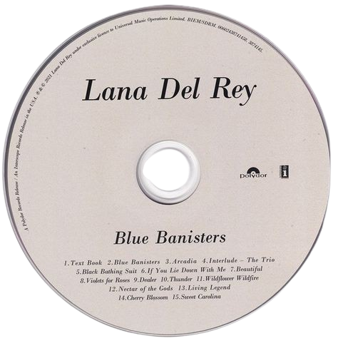

Lana Del Rey
INICIO
BIOGRAFIA
DISCOGRAFIA
INFLUENCIA EN LA MUSICA
MET GALA
PREMIOS-NOMINACIONES
Blue Banisters
Text Book
Blue Banisters
Arcadia
Interlude – The Trio
If You Lie Down with Me
Beautiful
Violets for Roses
Dealer (feat. Miles Kane)
Thunder
Wildflower Wildfire
Nectar of the Gods
Living Legend
Cherry Blossom
Sweet Carolina
